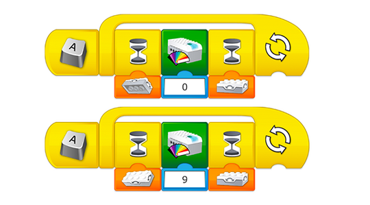

プログラミング的思考スキル
この課題で、前時までの課題で得た知識を応用できているか評価します。
プログラミングヘルプ
ライト オン/オフの使用
解決策の一例として、多彩な色付きの LED ライトを信号に使用することができます。ライトを使ったモールス信号は船の交信によく利用されます。

その他のプログラムと協働作業
このプロジェクトは次の要件を加えてもっとやりごたえのあるものにできます。
-
クラス全体に同じメッセージを伝達することを複数のチームに試してもらいます。例えば、最初のチームが 2 番目のチームにメッセージを送ったら、2 番目のチームは同じメッセージを 3 番目のチームに送ります。
-
チーム間でのメッセージの伝達にかかわる難点を話し合います。
「発表する」ステージの評価
「発表する」ステージでは、適切な語彙を用いて、詳細を適度に交えて自分の解決策を説明できるようにします。
フィードバックは1～4段階で与えることができます。
1.チームの一員として作業を行い、解決方法の正当性を説明し、取得した情報を活用することができない。 2.チームの一員として作業し、助言または助けを借りて情報を収集・活用し、解決策の正当性を説明できる。 3.チームの一員として作業し、チームの話し合いに貢献し、解決策の正当性を説明し、学習内容についての情報を収集・活用できる。 4.チームの一員として作業し、リーダーシップを発揮し、情報の収集・活用を行いながら解決策の正当性を説明し、詳しく説明できる。
教師用ガイドに、プログラミング的思考スキルの具体的な評価基準が掲載されています。